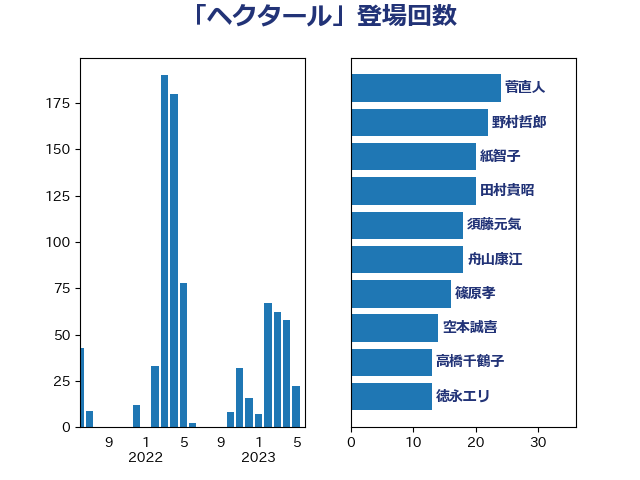

単語「ヘクタール」

| 野上浩太郎 | 自由民主党 | 49 回 |
| 坂本哲志 | 自由民主党 | 39 回 |
| 田村貴昭 | 日本共産党 | 36 回 |
| 紙智子 | 日本共産党 | 35 回 |
| 舟山康江 | 国民民主党 | 35 回 |
| 菅直人 | 立憲民主党 | 23 回 |
| 須藤元気 | 無所属 | 20 回 |
| 徳永エリ | 立憲民主党 | 18 回 |
| 石井苗子 | 日本維新の会 | 17 回 |
| 葉梨康弘 | 自由民主党 | 15 回 |
| 空本誠喜 | 日本維新の会 | 14 回 |
| 玉木雄一郎 | 国民民主党 | 13 回 |
| 金子恵美 | 立憲民主党 | 13 回 |
| 池畑浩太朗 | 日本維新の会 | 10 回 |
| 小寺裕雄 | 自由民主党 | 9 回 |
| 緑川貴士 | 立憲民主党 | 9 回 |
| 大塚耕平 | 国民民主党 | 8 回 |
| 山崎誠 | 立憲民主党 | 8 回 |
| 柳ヶ瀬裕文 | 日本維新の会 | 8 回 |
| 舞立昇治 | 自由民主党 | 8 回 |
| 宮崎政久 | 自由民主党 | 7 回 |
| 西銘恒三郎 | 自由民主党 | 7 回 |
| 長友慎治 | 国民民主党 | 7 回 |
| 下野六太 | 公明党 | 6 回 |
| 中村裕之 | 自由民主党 | 6 回 |
| 小山展弘 | 立憲民主党 | 6 回 |
| 神谷裕 | 立憲民主党 | 6 回 |
| 稲津久 | 公明党 | 6 回 |
| 重徳和彦 | 立憲民主党 | 6 回 |
| 住吉寛紀 | 日本維新の会 | 5 回 |
| 山下芳生 | 日本共産党 | 5 回 |
| 川田龍平 | 立憲民主党 | 5 回 |
| 田名部匡代 | 立憲民主党 | 5 回 |
| 石垣のりこ | 立憲民主党 | 5 回 |
| 宮内秀樹 | 自由民主党 | 4 回 |
| 宮崎雅夫 | 自由民主党 | 4 回 |
| 山下貴司 | 自由民主党 | 4 回 |
| 斉藤鉄夫 | 公明党 | 4 回 |
| 渡辺創 | 立憲民主党 | 4 回 |
| 進藤金日子 | 自由民主党 | 4 回 |
| 吉川赳 | 無所属 | 3 回 |
| 宮下一郎 | 自由民主党 | 3 回 |
| 山田俊男 | 自由民主党 | 3 回 |
| 岸信夫 | 自由民主党 | 3 回 |
| 平山佐知子 | 無所属 | 3 回 |
| 渡辺孝一 | 自由民主党 | 3 回 |
| 熊谷裕人 | 立憲民主党 | 3 回 |
| 福島伸享 | 無所属 | 3 回 |
| 藤岡隆雄 | 立憲民主党 | 3 回 |
| 藤木眞也 | 自由民主党 | 3 回 |
| 野中厚 | 自由民主党 | 3 回 |
| 高橋光男 | 公明党 | 3 回 |
| 高橋克法 | 自由民主党 | 3 回 |
| 高橋千鶴子 | 日本共産党 | 3 回 |
| 加藤竜祥 | 自由民主党 | 2 回 |
| 堀内詔子 | 自由民主党 | 2 回 |
| 堤かなめ | 立憲民主党 | 2 回 |
| 室井邦彦 | 日本維新の会 | 2 回 |
| 小泉進次郎 | 自由民主党 | 2 回 |
| 山口壯 | 自由民主党 | 2 回 |
| 後藤祐一 | 立憲民主党 | 2 回 |
| 杉田水脈 | 自由民主党 | 2 回 |
| 梶山弘志 | 自由民主党 | 2 回 |
| 武部新 | 自由民主党 | 2 回 |
| 河西宏一 | 公明党 | 2 回 |
| 河野義博 | 公明党 | 2 回 |
| 熊野正士 | 公明党 | 2 回 |
| 田村智子 | 日本共産党 | 2 回 |
| 神津たけし | 立憲民主党 | 2 回 |
| 稲富修二 | 立憲民主党 | 2 回 |
| 穀田恵二 | 日本共産党 | 2 回 |
| 赤羽一嘉 | 公明党 | 2 回 |
| 酒井庸行 | 自由民主党 | 2 回 |
| 鈴木憲和 | 自由民主党 | 2 回 |
| たがや亮 | れいわ新選組 | 1 回 |
| 上田英俊 | 自由民主党 | 1 回 |
| 中川康洋 | 公明党 | 1 回 |
| 五十嵐清 | 自由民主党 | 1 回 |
| 伊波洋一 | 無所属 | 1 回 |
| 北村経夫 | 自由民主党 | 1 回 |
| 和田有一朗 | 日本維新の会 | 1 回 |
| 嘉田由紀子 | 無所属 | 1 回 |
| 大口善徳 | 公明党 | 1 回 |
| 小沼巧 | 立憲民主党 | 1 回 |
| 山田勝彦 | 立憲民主党 | 1 回 |
| 岩渕友 | 日本共産党 | 1 回 |
| 岩田和親 | 自由民主党 | 1 回 |
| 岸田文雄 | 自由民主党 | 1 回 |
| 岸真紀子 | 立憲民主党 | 1 回 |
| 市村浩一郎 | 日本維新の会 | 1 回 |
| 平口洋 | 自由民主党 | 1 回 |
| 庄子賢一 | 公明党 | 1 回 |
| 新垣邦男 | 立憲民主党 | 1 回 |
| 朝日健太郎 | 自由民主党 | 1 回 |
| 梅村みずほ | 日本維新の会 | 1 回 |
| 横沢高徳 | 立憲民主党 | 1 回 |
| 江藤拓 | 自由民主党 | 1 回 |
| 田嶋要 | 立憲民主党 | 1 回 |
| 福岡資麿 | 自由民主党 | 1 回 |
| 竹内真二 | 公明党 | 1 回 |
| 篠原孝 | 立憲民主党 | 1 回 |
| 藤井比早之 | 自由民主党 | 1 回 |
| 谷公一 | 自由民主党 | 1 回 |
| 赤嶺政賢 | 日本共産党 | 1 回 |
| 遠藤良太 | 日本維新の会 | 1 回 |
| 野間健 | 立憲民主党 | 1 回 |